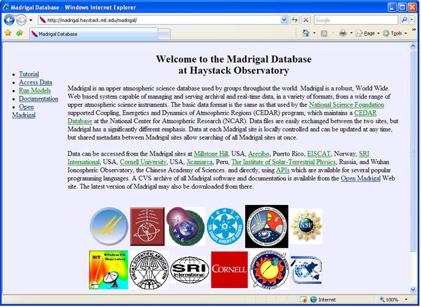
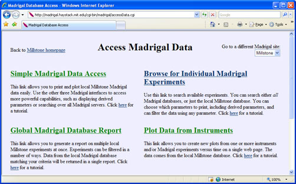

| Accessing data through the web | Doc home | Madrigal home |
All Madrigal sites have a similar homepage:
The Madrigal homepage contains a number of links on the left hand side. Click AccessData to access Madrigal Data. Other links on this page include:
|
 |
There are four ways to access Madrigal data.
Simple Madrigal Data Access allows new users of Madrigal to print and plot data easily. In order to make it easy to use, a number of Madrigal's capabilities are not available, including the ability to choose which parameters to print, the ability to display derived parameters, and the ability to filter data. This tutorial continues with the simple Madrigal data access tutorial. To jump ahead to one of the other three more full-featured ways to access Madrigal data, go to Browse for Individual Madrigal Experiments, Global Madrigal Database Report or Plot Data from Instruments. |
 |
| Accessing data through the web | Doc home | Madrigal home |